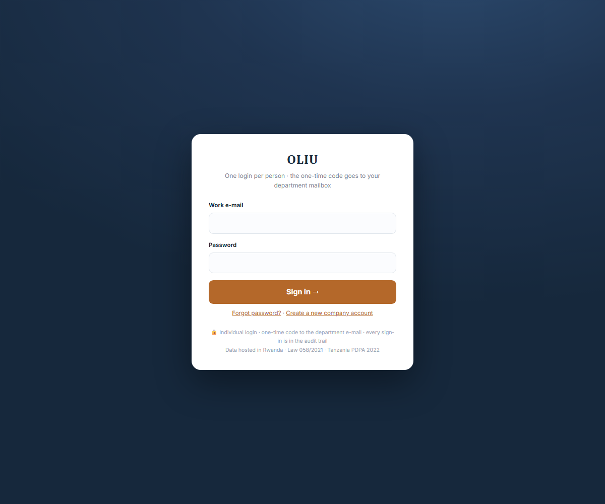
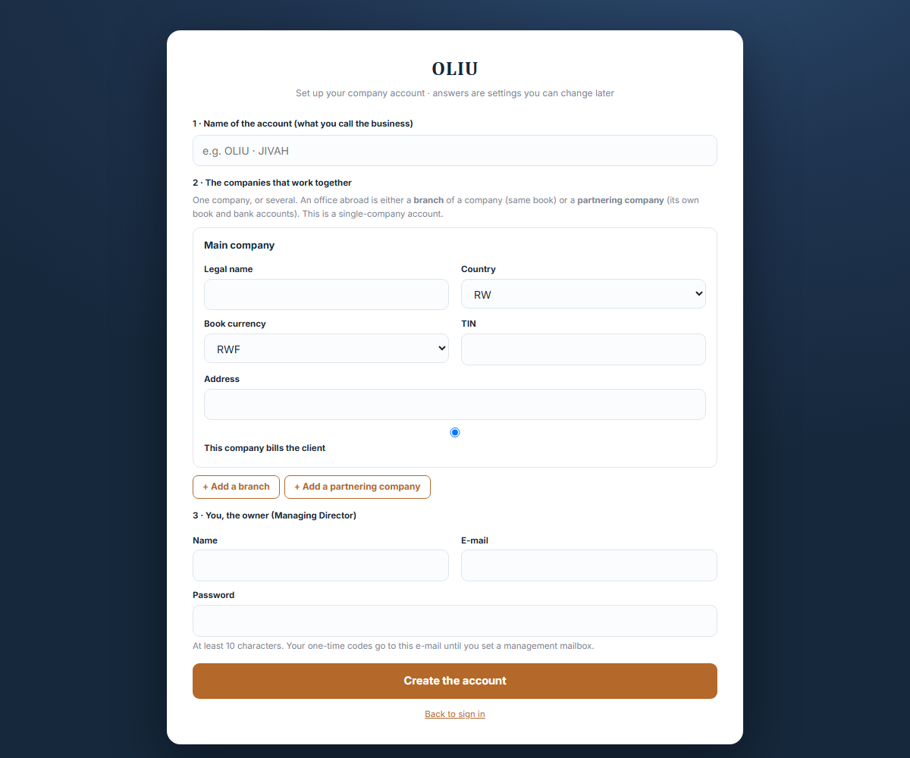
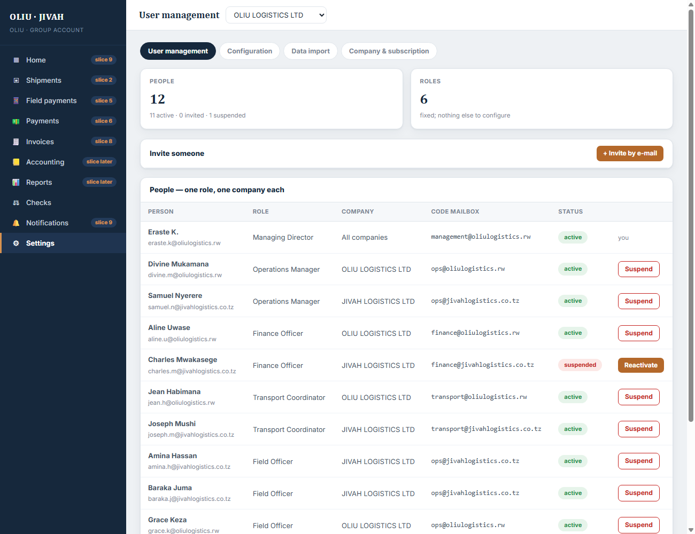
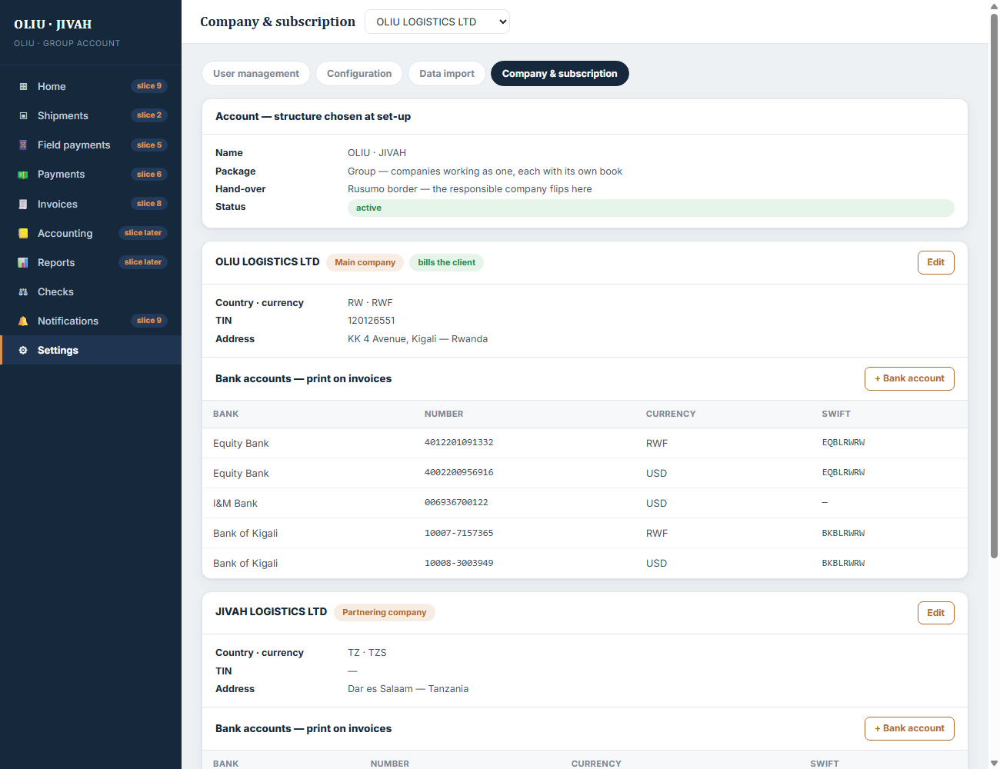
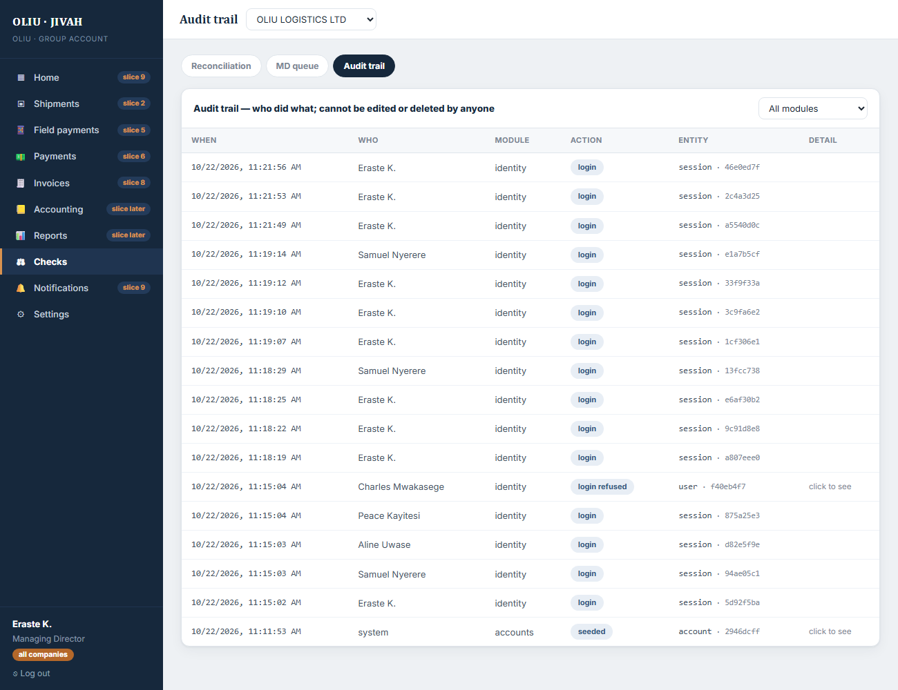
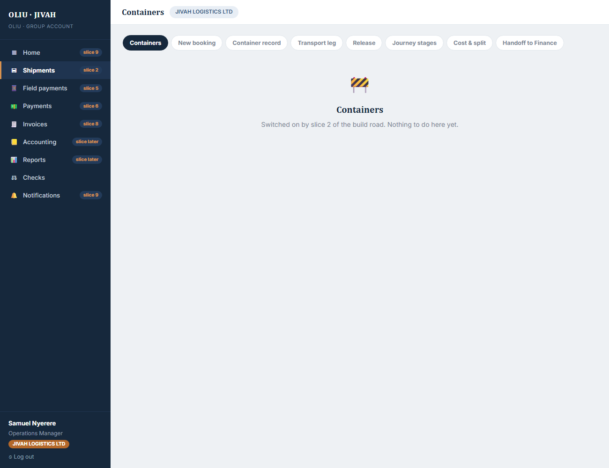

Built: 22 October 2026 · Status: code complete, 12 automated tests passing, waiting for your live test. Roadmap: slice 1 of 12, the spine. Nothing else exists yet, on purpose.
This note is written for you, not for a developer. It says what exists, how it works, how to try it, what was tested, what was left out, and the questions for you.
browser (Nuxt, port 3000) ──/api/*──▶ API (Express, port 3001) ──▶ PostgreSQL
login · one-time code checks who you are and Account
set-up questions what you may touch on Company · BankAccount
Settings → User management EVERY request User · Session · OtpChallenge · ActionToken
Settings → Company & subscription FeatureSwitch
Checks → Audit trail AuditEvent (append-only)
Three screens work. Every other menu is there, in the right place, and says which slice brings it.
 |
 |
 |
 |
 |
 |
| Rule | Where it lives | How you can see it |
|---|---|---|
| One login per person, one role, in one company or all | User table: role, companyId (null = all) |
User management: each person's row |
| The one-time code goes to a department mailbox, not a personal inbox | User.otpMailbox |
Login step 2 names the mailbox |
| A person sees only their company's side | middleware/auth.ts builds a scope from the session; every query filters by it |
Sign in as Samuel (JIVAH): only JIVAH in the switcher, no OLIU anywhere |
| The owner sees across all companies | MD and Reporting Officer have companyId = null |
Sign in as Eraste: switcher with OLIU, JIVAH, Rusumo office |
| A suspended person is refused and the attempt is kept | identity/routes.ts login → login_refused audit row |
Try Charles Mwakasege |
| History cannot be edited or deleted, by anyone | a database trigger on AuditEvent refuses UPDATE and DELETE |
Test "the audit table refuses UPDATE and DELETE" |
| The browser is never trusted | the web app only displays what /api/auth/me returns; menus, permissions and company lists come from the API |
Change nothing in the browser, the API still decides |
Take "Aline, Finance Officer at OLIU, opens User management".
GET /api/users with the session cookie. Nuxt proxies it to the API.attachSession (api/src/middleware/auth.ts) reads the cookie, checks its signature, loads the
session and the user. It builds a Scope: { accountId, userId, role: FINANCE_OFFICER, companyId: OLIU }.requireAuth, then queries users
where accountId = scope.accountId and (companyId = OLIU or companyId = null). The filter comes
from the scope, never from anything Aline typed.Take "Eraste invites Charles as JIVAH Finance Officer".
POST /api/users with name, e-mail, role, company. requirePermission('users'): only the MD passes.INVITED, an audit row user_invited is written.http://localhost:3001/dev/mail).ACTIVE. Audit row password_set.shared/src/index.ts the vocabulary: six roles, their permissions and screens, packages, stages,
the set-up questions (validation rules), company kinds
api/src/config.ts reads .env once, refuses to start if something is missing
api/src/db.ts the database client and the scope helpers (byAccount, byCompany)
api/src/middleware/auth.ts who is calling; requireAuth / requireRole / requirePermission
api/src/lib/ audit, crypto (hashing, signing), mail, errors, validation
api/src/modules/identity/ login, one-time code, logout, me, set-password, forgot
api/src/modules/accounts/ create account, companies, bank accounts, people
api/src/modules/audit/ read the trail
api/src/modules/dev/ development inbox (never in production)
api/prisma/schema.prisma the tables; migrations/ holds the SQL that created them
api/prisma/seed.ts the OLIU · JIVAH demo account with twelve people
api/test/slice1.test.ts the roadmap's tests as code
web/pages/ login, setup, set-password, forgot, app/[screen]
web/components/Screen*.vue the three built screens
web/layouts/app.vue the sidebar built from what the API says the role may open
npm run db:start (keep this window open)
npm run db:migrate
npm run db:seed
npm run dev:api (second window)
npm run dev:web (third window)
Open http://localhost:3000. Password for every demo person: Oliu-demo-2026.
The six-digit code is at http://localhost:3001/dev/mail (nothing leaves your machine in development).
| Sign in as | What you should see | |
|---|---|---|
| Eraste K., MD | eraste.k@oliulogistics.rw | all ten menus, the company switcher, 12 people, the audit trail |
| Samuel Nyerere, Ops Manager JIVAH | samuel.n@jivahlogistics.co.tz | nine menus, no switcher, JIVAH only |
| Aline Uwase, Finance Officer OLIU | aline.u@oliulogistics.rw | Home, Payments, Invoices, Accounting, Reports, Notifications |
| Peace Kayitesi, Field Officer | peace.k@oliulogistics.rw | Shipments, Field payments, Notifications; cannot open the audit trail |
| Claire Irakoze, Reporting Officer | claire.i@oliulogistics.rw | read-only banner; audit trail readable |
| Charles Mwakasege | charles.m@jivahlogistics.co.tz | refused: suspended. Reactivate him as Eraste, then he can sign in |
Then as Eraste: invite someone, open the dev inbox, follow the link, set a password, sign in as them.
Try /setup to create a second, single-company account: it will have one company and no switcher.
Twelve automated tests run against a fresh database on every npm test (about 8 seconds):
Also done by hand through the running web app: the six logins above, the switcher guard, the people list, the audit trail, the dev inbox.
Security checklist for this slice: passwords hashed with argon2id · codes and link tokens stored only as
hashes · session cookie httpOnly, signed, SameSite · rate limits on login, code and set-up · every input
validated with a schema · every query parameterised by Prisma · secrets only in .env · helmet headers ·
errors never leak internals · dependencies pinned.
/setup, which is the same set-up form the tenant keeps.docker-compose.yml; nothing
in the code knows the difference. Hosting in Kigali is unchanged.npm run db:start again.